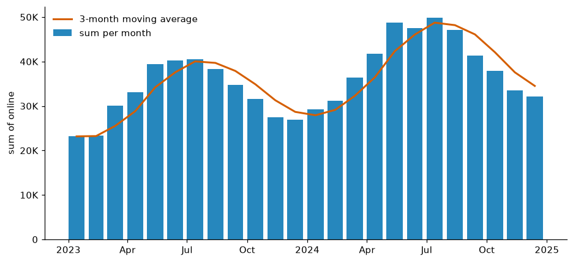
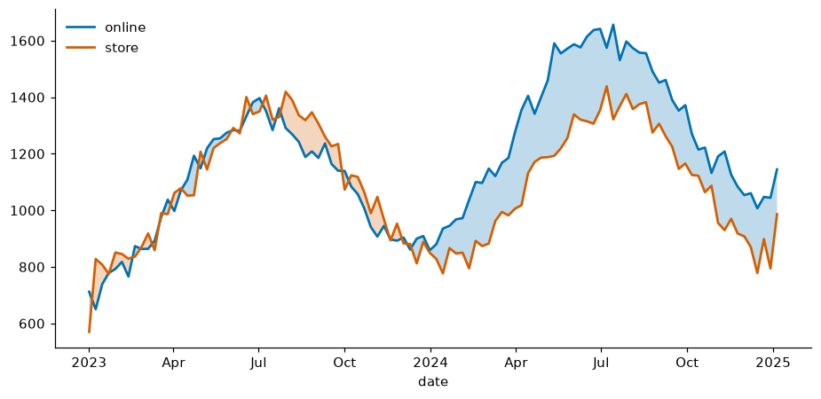
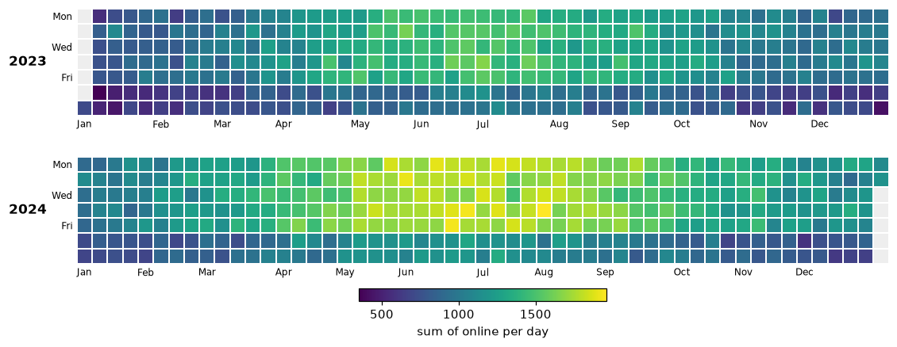
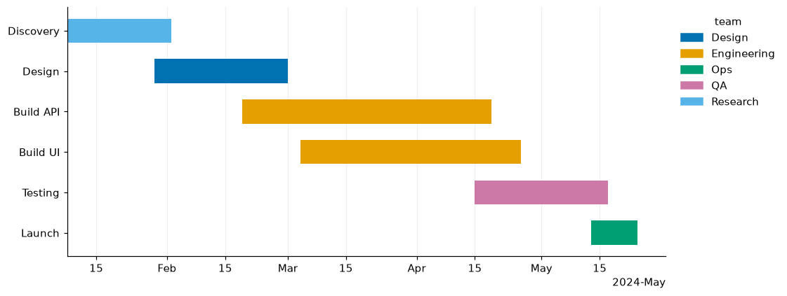
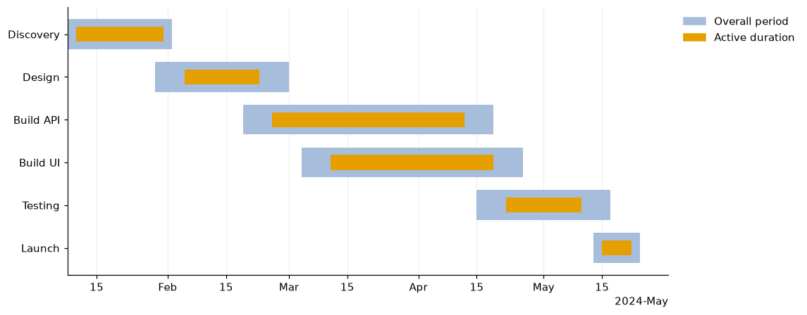

Time and projects¶
import viz_calc as vc
from viz_calc import datasets
sales = datasets.sales() # two years of daily 'online' and 'store' sales
proj = datasets.projects() # six tasks with planned and actual dates
1. Calendar periods with a trend¶
res = vc.period_bars(sales, date="date", value="online", freq="month", stat="sum", trend_window=3)
res.table.head(3)

| period | value | n | trend |
|---|---|---|---|
| 2023-01 | 23,174 | 31 | 23,174 |
| 2023-02 | 23,306 | 28 | 23,240 |
| 2023-03 | 30,086 | 31 | 25,522 |
- Periods are calendar periods (
day,week,month,quarter,year), so February is 28 or 29 days, not "30". - Periods with no data are kept: zero for
sum/count, a gap for other statistics. The time axis is never silently compressed. - The line is a trailing moving average of the bars over
trend_windowperiods;ncounts the non-missing values behind each bar (rows whose value is missing are left out, as they are bystat="count").
2. Two series and who leads¶
weekly = sales.set_index("date")[["online", "store"]].resample("W").mean().reset_index()
res = vc.timeseries_fill(weekly, time="date", series=["online", "store"])
res.info["crossovers"] # 26

The gap is shaded in the colour of whichever series is ahead, and the fill switches exactly where the lines cross (interpolated), not at the nearest sample.
3. Calendar heatmap¶

One row per year, weeks as columns, Monday at the top. All years share one
colour scale, and days without data are grey so they are not mistaken for
zero. Weekend dips and the summer peak stand out. It is drawn with
Matplotlib alone, removing the old calmap dependency.
4. Project timelines¶
res = vc.gantt(proj, task="task", start="start", end="end", group="team")
res.table # includes duration_days; pass today="2024-03-15" (or "now") for a reference line

res = vc.duration_plot(proj, label="task", start="start", end="end",
inner_start="work_start", inner_end="work_end")
res.table[["task", "outer_days", "inner_days", "inner_share"]]

Date ticks adapt to the range (days, months or years) through Matplotlib's
concise date formatter. gantt and duration_plot raise a clear error if
any task (or inner window) ends before it starts, or if one of your columns
is named like a table column they add (duration_days, outer_days,
inner_days, inner_share), which would otherwise be overwritten.
5. Animated bubbles¶
import pandas as pd
# df: one row per country and year, Gapminder style (made-up numbers for six countries)
first = pd.DataFrame({"country": ["A", "B", "C", "D", "E", "F"],
"continent": ["Africa", "Africa", "Asia", "Asia", "Europe", "Europe"],
"gdp": [1.5, 3.0, 4.0, 9.0, 25.0, 35.0], # per person, $1,000s, in 2000
"life_exp": [55.0, 60.0, 66.0, 71.0, 77.0, 80.0], # years
"population": [30.0, 60.0, 90.0, 140.0, 10.0, 70.0]}) # millions
df = pd.concat([first.assign(year=year, gdp=first["gdp"] * 1.04 ** (year - 2000),
life_exp=first["life_exp"] + 0.25 * (year - 2000),
population=first["population"] * 1.01 ** (year - 2000))
for year in range(2000, 2021, 5)], ignore_index=True)
res = vc.animated_bubble(df, time="year", x="gdp", y="life_exp", size="population",
color="continent", label="country")
anim = res.info["animation"]
anim.save("bubbles.gif", writer="pillow") # to a file (Pillow comes with Matplotlib)
html = anim.to_jshtml() # in a notebook, show it with IPython.display.HTML(html)
res.table # one row per frame: the mean of x, y and size
| year | gdp | life_exp | population |
|---|---|---|---|
| 2000 | 12.9 | 68.2 | 66.7 |
| 2005 | 15.7 | 69.4 | 70.1 |
| 2010 | 19.1 | 70.7 | 73.6 |
| 2015 | 23.3 | 71.9 | 77.4 |
| 2020 | 28.3 | 73.2 | 81.3 |
Two details keep frames comparable: bubble area is proportional to
size on one scale for the whole animation, and the axis limits are fixed
across frames. The original script rescaled sizes within every frame and
colour group, and let the axes rescale each frame, so the same bubble size
or position meant different values in different frames.
Frames play in time order, and res.info["frames"] and res.table list
them in that order: numbers and dates ascending, text that reads as numbers
or dates in numeric or date order ("9/1/2020" before "10/1/2020"), and
other labels alphabetically (a Categorical in its category order).
Numeric dates are read month first, or day first when only that reading
fits every label, so UK-style weeks ("19/01/2021", "02/02/2021") play
in date order. Text dates that fit no one format, or that read both ways
round in different orders ("05/01/2021" and "02/02/2021" alone), raise
a ValueError rather than being guessed; write them as ISO dates
(2021-01-05). Labels without a year, such as "1/2" or "9am", are
sorted as text on every pandas version. An
ordered Categorical always plays in its category order, so use one for
labels such as "Q4 2019" and "Q1 2020". Each frame is stamped with its
time: 2024-01-05, with the time of day (2024-01-05 14:00) and the zone
when the data has them; text labels are shown as written. The animation
stays attached to its figure, so plt.show() plays it, and using only
res.table raises no Matplotlib warning.